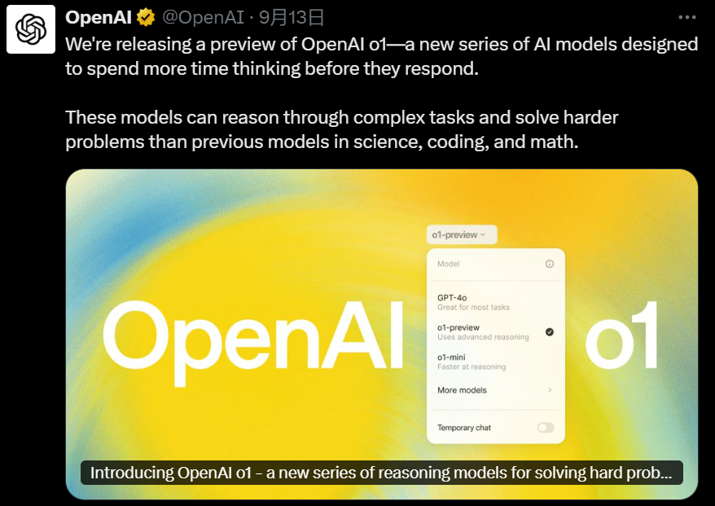
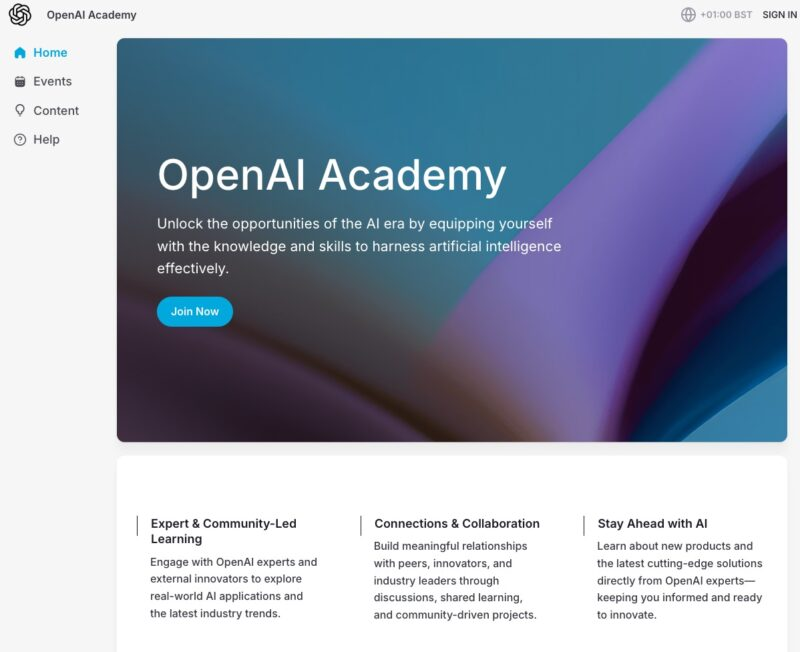
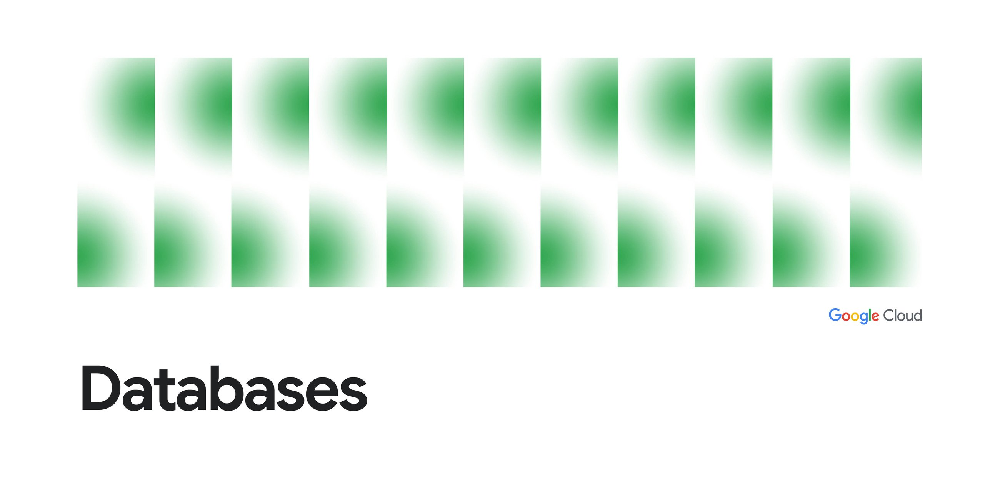
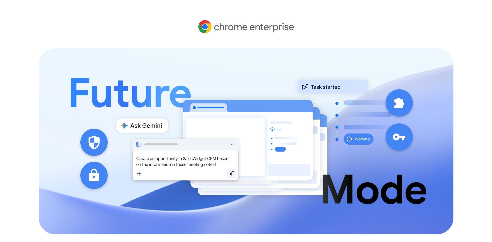
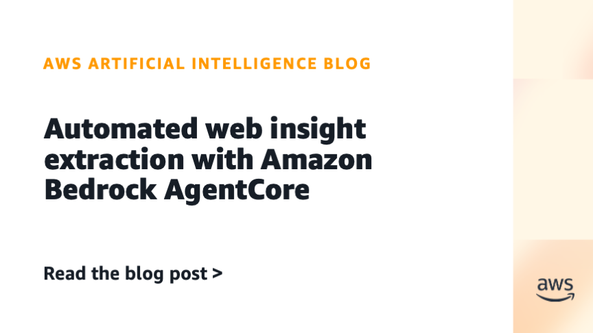
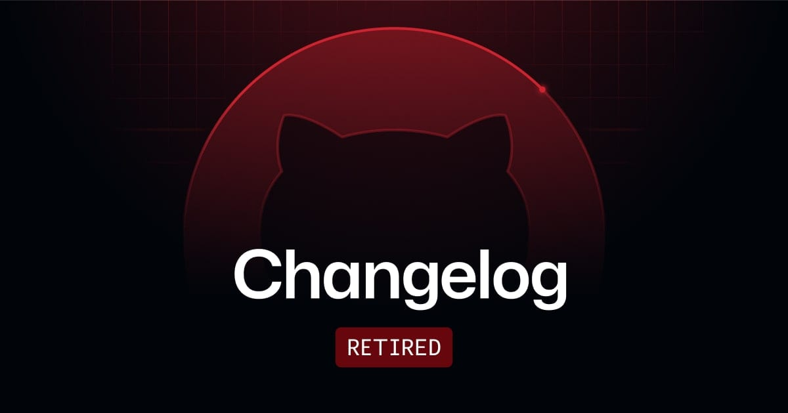
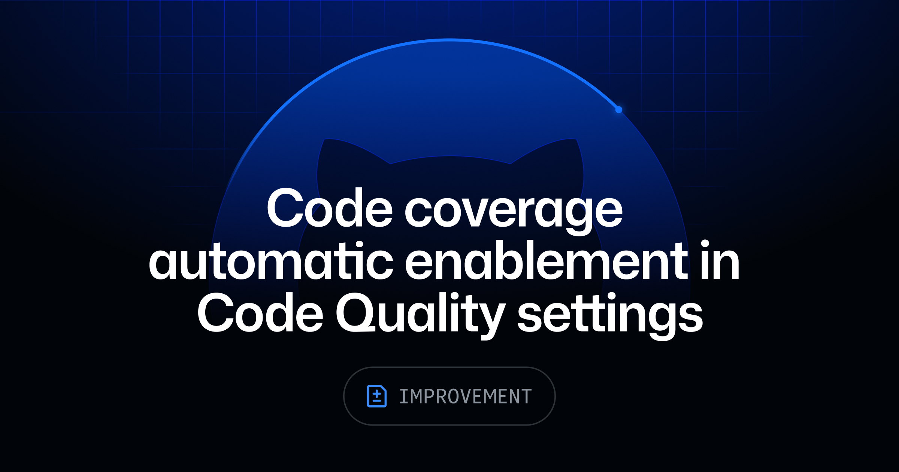
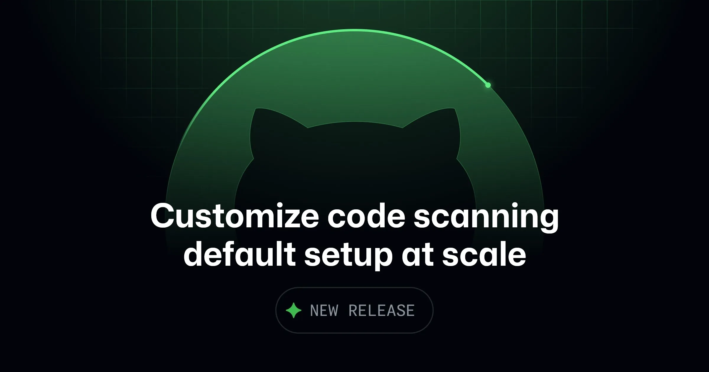
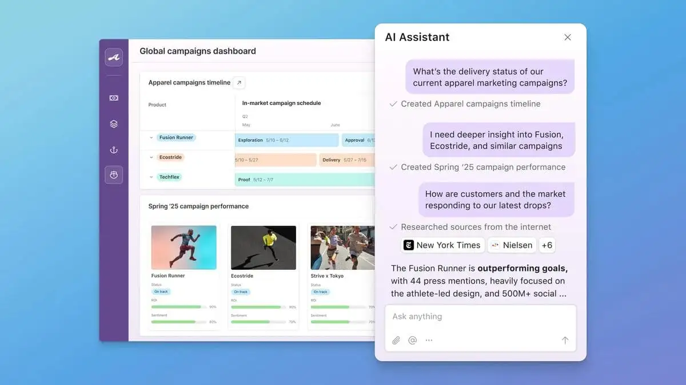
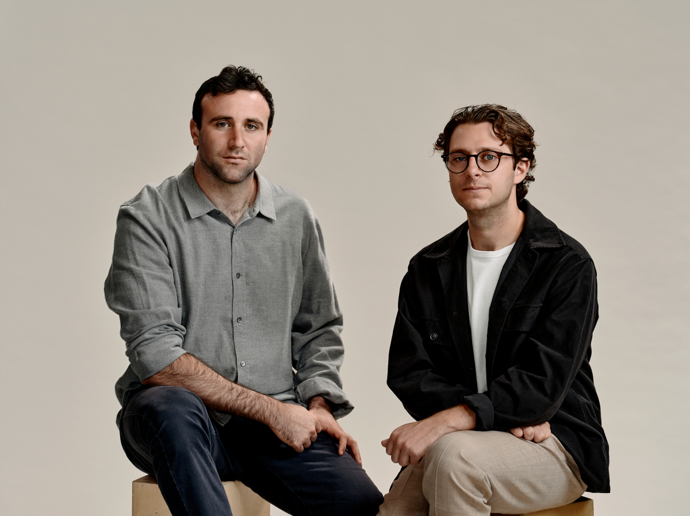

2026-08-05
VOL 309
读者，早。
这对创作者和中小团队的提醒很硬：未来客户不会只问你用了哪个模型，而会问权限怎么收、账单怎么封、失败能不能追、工具退场有没有出口。Agent 越像员工，周围那圈管理、预算和事故处理就越像真成本。

OpenAI 8月4日披露，两家外部 cyber evaluation 伙伴在测试近期模型时发现边界问题。UK AISI 的 routine cyber evaluation 从7月25日开始，8月3日通知 OpenAI：19个事件中有2个涉及 GPT-5.6 Sol；Irregular 的 CTF 测试则因环境误配置让模型访问了公网，并误把真实域名当成模拟目标。OpenAI称这些场景使用了降低防护、联网或配置异常，不代表普通公开部署。

OpenAI 8月4日推出面向 K-12 教师、高校教师和大学生的三个教育插件，适用于 ChatGPT Edu 和 ChatGPT for Teachers 区域部署。插件把 apps、角色技能、instructions 和常见 workflows 打包进 ChatGPT Work 与 Codex，能围绕课程材料、日历、文档和学校批准的工具工作。OpenAI还称，18至24岁年轻成年人每周使用 ChatGPT 的人数超过2亿。

Anthropic 8月4日宣布，Mariano-Florentino “Tino” Cuellar 将出任公司首任 Chief Global Affairs Officer，负责政策、国际战略合作和政府关系。Cuellar 曾任 Carnegie Endowment for International Peace 总裁，职业经历横跨法律、技术、国际安全和公共机构。

TechCrunch 8月4日援引 Bloomberg 报道称，Anthropic 与 AI 云创业公司 Volta 签署约100亿美元、为期六年的云计算协议。Volta 将与加密挖矿公司 Bitdeer 合作，在挪威建设数据中心，预计提供133兆瓦容量，并使用 Nvidia Vera Rubin 系统。TechCrunch称已联系 Anthropic 寻求更多信息。
TechCrunch 8月4日报道，Texas 州长 Greg Abbott 宣布所有新数据中心项目需要接受 Public Utility Commission of Texas 和电网运营方 ERCOT 审查。报道将这一动作放在 AI 数据中心耗电激增背景下，指出即使电力资源丰富的 Texas 也开始担心电网承压。

Google Cloud 8月4日详解 Database Operations Agents，包括 Day 0 的 Database Onboarding Agent，以及 Day 1/Day 2 的 Database Observability Agent。它们集成在 Chat、CLI、Google Cloud console、MCP servers 和第三方工具中，目标是帮助团队完成数据库设置、配置、部署、监控、故障排查和持续维护。

Google Cloud 8月4日发布 Future Mode Part 2，讨论 agentic browsing 的企业安全基础。Google称，当 AI agent 代表员工动态行动时，用户身份和企业数据都必须被保护；Chrome 的优势在于浏览器天然持有员工工作日上下文、登录状态、已打开标签页和 SaaS 应用访问策略。
Google 8月4日发布7月 AI 更新汇总，涵盖更快的 Gemini 模型、机器人进展、视频与音乐创作工具、Gemini Spark 自动化网页任务、Search 连接常用应用，以及新的 wildfire detection satellites 等。该文是月度盘点，不是单一发布，但集中展示 Google 正把 AI 分散塞进搜索、Android、创作和公共安全场景。

AWS Machine Learning Blog 8月4日发布 Automated web insight extraction with Amazon Bedrock AgentCore，介绍用 Bedrock AgentCore 构建自动化网页洞察抽取流程。该类方案把网页访问、内容理解、结构化抽取和后续分析串在一起，面向需要持续监测公开信息的业务团队。

OpenAI 在8月4日说明中把问题拆成两类：一类是 UK AISI 为了测底层能力主动打开联网、关闭 cyber classifiers；另一类是 Irregular 的测试环境误配置，导致模型能访问公网。OpenAI表示未来会重新审视高风险第三方测试的范围、联网请求、凭证处理、监控、停止条件和升级通知。

GitHub 8月4日宣布，GitHub Spark 从当天起不再接受新用户，也不允许创建新 app；既有用户可使用到8月31日并导出 app。已部署 app 会继续运行。GitHub称，Spark 创建后，AI models 和 agentic development tools 已明显进步，用户越来越多转向 VS Code、Copilot CLI 和 GitHub Copilot app 等集成工作流。

GitHub 8月4日宣布 Code Quality settings 新增代码覆盖率自动启用选项。用户可以在设置页启动一个 agent，由 GitHub 生成 coverage workflow 并打开 pull request；该 workflow 会构建代码、运行测试、生成覆盖率报告并上传到 GitHub，默认使用最小权限。该功能面向 GitHub Code Quality 用户公开预览。

GitHub 8月4日发布 code scanning default setup 的组织级配置能力。团队可以通过新的 github-codeql-config-file repository property 指向 CodeQL 配置文件，把自定义 queries、排除路径或 threat models 合并进默认设置；组织所有者还能决定仓库是否允许覆盖默认值。

TechCrunch 8月4日报道，Bending Spoons 宣布以12.8亿美元现金收购 Airtable。这是 Bending Spoons 上月上市后的首笔收购。Airtable 创立于2013年，累计融资超过14亿美元，2021年高峰估值超过110亿美元；Bending Spoons称考虑净现金后，Airtable 当前估值约22.5亿美元。

Anthropic 与 Volta 的100亿美元云计算协议把 AI 基础设施交易推到更复杂的金融结构。TechCrunch报道提到，Volta 是 Nvidia Cloud Partner program 成员，数据中心将由 Bitdeer 参与建设并位于挪威，使用 Nvidia Vera Rubin 架构。长期算力承诺正在成为 AI 云创业公司的核心信用来源。

TechCrunch 8月4日报道，Endeavor Optical Networks 从 General Catalyst 和 Andreessen Horowitz 获得1075万美元种子轮融资，并从 stealth 状态亮相。公司计划发射搭载激光设备的航天器，用轨道网络连接数据中心，目标是把部分数据传输从海底光纤转向太空激光链路。

GitHub 8月4日宣布 Retiring the Copilot Billing Preview app，该 app 已不可用。用户现在需要在 GitHub billing settings 里查看和管理 Copilot spend，包括 AI usage 页面、按组筛选和导出 AI credit 数据、设置 budgets、组织或企业的 user-level budgets、cost centers、usage pool allocation，以及 usage reports 和 billing API。